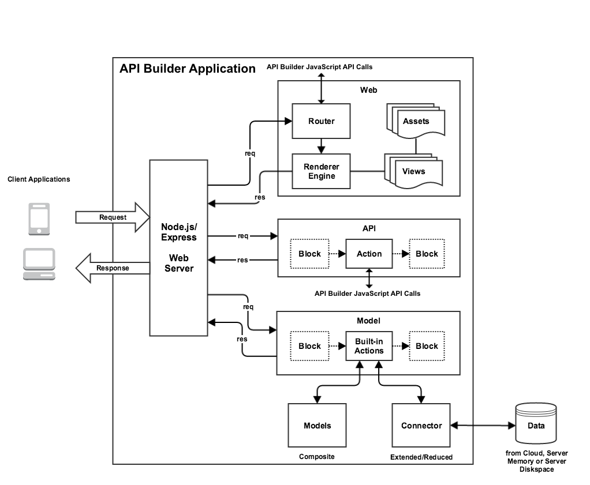

API Builder Tools
Overview
API Builder lets you build and deploy API endpoints that can be consumed by any client application. An API Builder project is a Node.js application that runs in API Runtime Services. An API Builder application is comprised of several components. You can either define the components using JavaScript files placed in specific directories, which are automatically loaded when creating an API Builder instance or programmatically create components after initializing an API Builder instance. For information about the components, see the diagram and sections below.
To get started with API Builder, see the API Builder Getting Started.

Connectors
Connectors are adaptors that allow you to read and write data to and from an external data source, such as Mobile Backend Services, MySQL, Salesforce, and MongoDB, or in server memory. You can either add an existing connector to your API Builder application or create one to interface with your custom data source.
Models
Models provide a standardized interface for an API Builder application, which allows client applications to access data. Models are either provided by a connector, reduced or extended from an existing model, or composed of several models (composite models) using a left or an inner join operation.
APIs
APIs - Legacy are custom endpoints that allow you to access and execute custom operations on model data. Create an API if you want to execute an operation not exposed by the standardized interface.
Blocks
API Builder Blocks - Legacy are filters that allow you to pre- or post-process data. Blocks are optional and can be used by either APIs or Models.
Webs
API Builder Web is a framework to create endpoints that render HTML for client applications. An API Builder Web is composed of a router (API endpoint), renderer engine (generates HTML by applying data to a view), view (template file) and static assets, such as JavaScript files, images, CSS, etc.